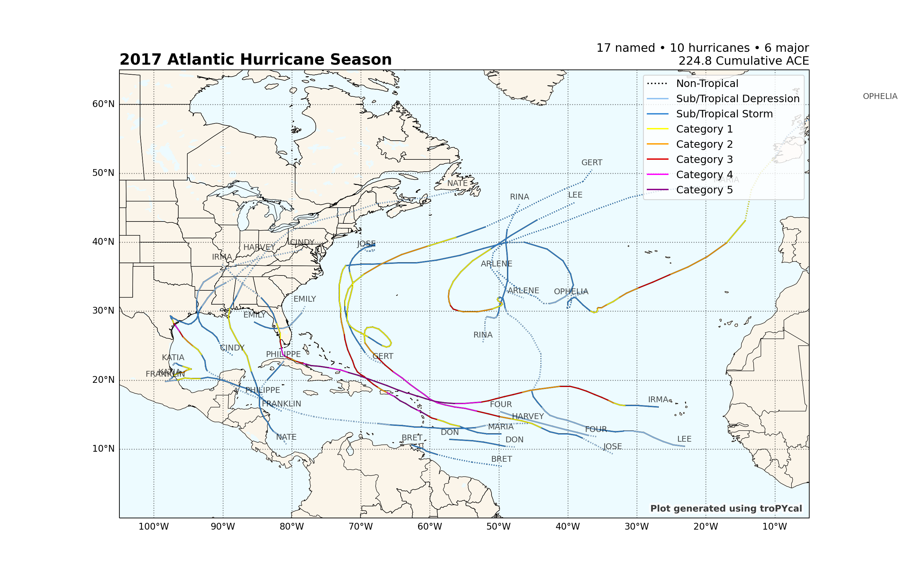
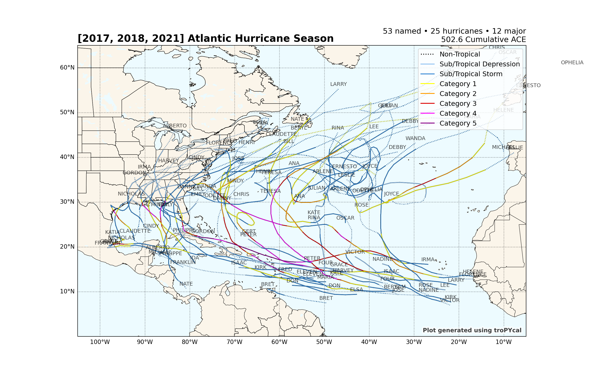

Note
Click here to download the full example code
Individual Season Analysis¶
This sample script illustrates how to retrieve, visualize and analyze seasons from the HURDAT2 dataset.
import tropycal.tracks as tracks
HURTDAT2 Dataset¶
Let’s start by creating an instance of a TrackDataset object. By default, this reads in the HURDAT2 dataset from the National Hurricane Center (NHC) website. For this example we’ll be using the HURDAT2 dataset over the North Atlantic basin.
HURDAT data is not available for the most recent hurricane seasons. To include the latest data up through today, the “include_btk” flag would need to be set to True, which reads in preliminary best track data from the NHC website.
basin = tracks.TrackDataset(basin='north_atlantic',source='hurdat',include_btk=False)
Out:
--> Starting to read in HURDAT2 data
--> Completed reading in HURDAT2 data (4.66 seconds)
Individual season analysis¶
Individual seasons can be retrieved from the dataset by calling the get_season() function, which returns an instance of a Season object.
Let’s retrieve an instance of the 2017 Atlantic Hurricane Season:
season = basin.get_season(2017)
We can quickly visualize what the Season object contains by printing it:
print(season)
Out:
<tropycal.tracks.Season>
Season Summary:
Total Storms: 18
Named Storms: 17
Hurricanes: 10
Major Hurricanes: 6
Season ACE: 224.8
More Information:
year: 2017
basin: north_atlantic
source_basin: north_atlantic
source: hurdat
source_info: NHC Hurricane Database
The Season object can be converted to a Pandas DataFrame, which lists a summary of storms during the season:
A more detailed summary of the season can be retrieved using the summary() method:
print(season.summary())
Out:
{'id': ['AL012017', 'AL022017', 'AL032017', 'AL042017', 'AL052017', 'AL062017', 'AL072017', 'AL082017', 'AL092017', 'AL112017', 'AL122017', 'AL132017', 'AL142017', 'AL152017', 'AL162017', 'AL172017', 'AL182017', 'AL192017'], 'operational_id': ['AL012017', 'AL022017', 'AL032017', 'AL042017', 'AL052017', 'AL062017', 'AL072017', 'AL082017', 'AL092017', 'AL112017', 'AL122017', 'AL132017', 'AL142017', 'AL152017', 'AL162017', 'AL172017', 'AL182017', 'AL192017'], 'name': ['ARLENE', 'BRET', 'CINDY', 'FOUR', 'DON', 'EMILY', 'FRANKLIN', 'GERT', 'HARVEY', 'IRMA', 'JOSE', 'KATIA', 'LEE', 'MARIA', 'NATE', 'OPHELIA', 'PHILIPPE', 'RINA'], 'max_wspd': [45, 45, 50, 25, 45, 50, 75, 95, 115, 155, 135, 90, 100, 150, 80, 100, 35, 50], 'min_mslp': [990, 1007, 991, 1009, 1005, 1001, 981, 962, 937, 914, 938, 972, 962, 908, 981, 959, 1000, 991], 'category': [0, 0, 0, -1, 0, 0, 1, 2, 4, 5, 4, 2, 3, 5, 1, 3, 0, 0], 'ace': [0.8, 0.5, 1.8, 0.0, 0.8, 0.6, 3.7, 7.8, 11.4, 64.9, 43.3, 6.1, 17.9, 44.8, 4.1, 14.5, 0.1, 1.7], 'season_start': datetime.datetime(2017, 4, 19, 0, 0), 'season_end': datetime.datetime(2017, 11, 9, 0, 0), 'season_storms': 18, 'season_named': 17, 'season_hurricane': 10, 'season_major': 6, 'season_ace': 224.8, 'season_subtrop_pure': 0, 'season_subtrop_partial': 0}
Plot Season¶
Plotting a Season object can be quickly done using the plot() method.
Note that you can pass various arguments to the plot function, such as customizing the map and track aspects. The “Customizing Storm Plots” example script has more examples on how to customize such plots. Read through the documentation for more customization options.
Out:
<GeoAxesSubplot:title={'left':'2017 Atlantic Hurricane Season','right':'17 named • 10 hurricanes • 6 major\n224.8 Cumulative ACE'}>
Multiple Season Analysis¶
Seasons can also be combined for multi-season analyses by simply adding multiple season objects together.
season1 = basin.get_season(2017)
season2 = basin.get_season(2018)
season3 = basin.get_season(2021)
combined = season1 + season2 + season3
print(combined)
Out:
<tropycal.tracks.Season>
Season Summary:
Total Storms: [18, 16, 21]
Named Storms: [17, 15, 21]
Hurricanes: [10, 8, 7]
Major Hurricanes: [6, 2, 4]
Season ACE: [224.8, 132.5, 145.3]
More Information:
year: [2017, 2018, 2021]
basin: north_atlantic
source_basin: north_atlantic
source: hurdat
source_info: NHC Hurricane Database
The combined seasons can then be plotted on the same map:
Out:
<GeoAxesSubplot:title={'left':'[2017, 2018, 2021] Atlantic Hurricane Season','right':'53 named • 25 hurricanes • 12 major\n502.6 Cumulative ACE'}>
The summary method also generates summaries for all seasons in this object:
print(combined.summary())
Out:
{'id': [['AL012017', 'AL022017', 'AL032017', 'AL042017', 'AL052017', 'AL062017', 'AL072017', 'AL082017', 'AL092017', 'AL112017', 'AL122017', 'AL132017', 'AL142017', 'AL152017', 'AL162017', 'AL172017', 'AL182017', 'AL192017'], ['AL012018', 'AL022018', 'AL032018', 'AL042018', 'AL052018', 'AL062018', 'AL072018', 'AL082018', 'AL092018', 'AL102018', 'AL112018', 'AL122018', 'AL132018', 'AL142018', 'AL152018', 'AL162018'], ['AL012021', 'AL022021', 'AL032021', 'AL042021', 'AL052021', 'AL062021', 'AL072021', 'AL082021', 'AL092021', 'AL102021', 'AL112021', 'AL122021', 'AL132021', 'AL142021', 'AL152021', 'AL162021', 'AL172021', 'AL182021', 'AL192021', 'AL202021', 'AL212021']], 'operational_id': [['AL012017', 'AL022017', 'AL032017', 'AL042017', 'AL052017', 'AL062017', 'AL072017', 'AL082017', 'AL092017', 'AL112017', 'AL122017', 'AL132017', 'AL142017', 'AL152017', 'AL162017', 'AL172017', 'AL182017', 'AL192017'], ['AL012018', 'AL022018', 'AL032018', 'AL042018', 'AL052018', 'AL062018', 'AL072018', 'AL082018', 'AL092018', 'AL102018', 'AL112018', 'AL122018', 'AL132018', 'AL142018', 'AL152018', 'AL162018'], ['AL012021', 'AL022021', 'AL032021', 'AL042021', 'AL052021', 'AL062021', 'AL072021', 'AL082021', 'AL092021', 'AL102021', 'AL112021', 'AL122021', 'AL132021', 'AL142021', 'AL152021', 'AL162021', 'AL172021', 'AL182021', 'AL192021', 'AL202021', 'AL212021']], 'name': [['ARLENE', 'BRET', 'CINDY', 'FOUR', 'DON', 'EMILY', 'FRANKLIN', 'GERT', 'HARVEY', 'IRMA', 'JOSE', 'KATIA', 'LEE', 'MARIA', 'NATE', 'OPHELIA', 'PHILIPPE', 'RINA'], ['ALBERTO', 'BERYL', 'CHRIS', 'DEBBY', 'ERNESTO', 'FLORENCE', 'GORDON', 'HELENE', 'ISAAC', 'JOYCE', 'ELEVEN', 'KIRK', 'LESLIE', 'MICHAEL', 'NADINE', 'OSCAR'], ['ANA', 'BILL', 'CLAUDETTE', 'DANNY', 'ELSA', 'FRED', 'GRACE', 'HENRI', 'IDA', 'KATE', 'JULIAN', 'LARRY', 'MINDY', 'NICHOLAS', 'ODETTE', 'PETER', 'ROSE', 'SAM', 'TERESA', 'VICTOR', 'WANDA']], 'max_wspd': [[45, 45, 50, 25, 45, 50, 75, 95, 115, 155, 135, 90, 100, 150, 80, 100, 35, 50], [55, 70, 90, 45, 40, 130, 60, 95, 65, 45, 30, 55, 80, 140, 55, 95], [40, 55, 40, 40, 75, 55, 105, 65, 130, 40, 50, 110, 50, 65, 40, 45, 50, 135, 40, 55, 50]], 'min_mslp': [[990, 1007, 991, 1009, 1005, 1001, 981, 962, 937, 914, 938, 972, 962, 908, 981, 959, 1000, 991], [990, 991, 969, 998, 1003, 937, 996, 967, 995, 995, 1007, 998, 968, 919, 995, 966], [1004, 992, 1003, 1009, 991, 991, 967, 986, 929, 1004, 993, 953, 1000, 988, 1005, 1005, 1004, 927, 1008, 997, 983]], 'category': [[0, 0, 0, -1, 0, 0, 1, 2, 4, 5, 4, 2, 3, 5, 1, 3, 0, 0], [0, 1, 2, 0, 0, 4, 0, 2, 1, 0, -1, 0, 1, 5, 0, 2], [0, 0, 0, 0, 1, 0, 3, 1, 4, 0, 0, 3, 0, 1, 0, 0, 0, 4, 0, 0, 0]], 'ace': [[0.8, 0.5, 1.8, 0.0, 0.8, 0.6, 3.7, 7.8, 11.4, 64.9, 43.3, 6.1, 17.9, 44.8, 4.1, 14.5, 0.1, 1.7], [1.8, 4.8, 7.4, 1.5, 1.4, 39.7, 2.3, 15.7, 6.8, 2.4, 0.0, 3.2, 21.3, 12.5, 2.7, 9.0], [0.8, 1.0, 1.1, 0.4, 9.9, 2.4, 8.6, 7.8, 10.6, 0.6, 1.1, 31.9, 0.4, 2.4, 0.4, 1.8, 1.4, 54.0, 0.6, 2.4, 5.7]], 'seasons': [2017, 2018, 2021], 'season_start': [datetime.datetime(2017, 4, 19, 0, 0), datetime.datetime(2018, 5, 25, 12, 0), datetime.datetime(2021, 5, 22, 6, 0)], 'season_end': [datetime.datetime(2017, 11, 9, 0, 0), datetime.datetime(2018, 10, 31, 12, 0), datetime.datetime(2021, 11, 7, 6, 0)], 'season_storms': [18, 16, 21], 'season_named': [17, 15, 21], 'season_hurricane': [10, 8, 7], 'season_major': [6, 2, 4], 'season_ace': [224.8, 132.5, 145.3], 'season_subtrop_pure': [0, 7, 3], 'season_subtrop_partial': [0, 7, 3]}
Total running time of the script: ( 0 minutes 13.410 seconds)